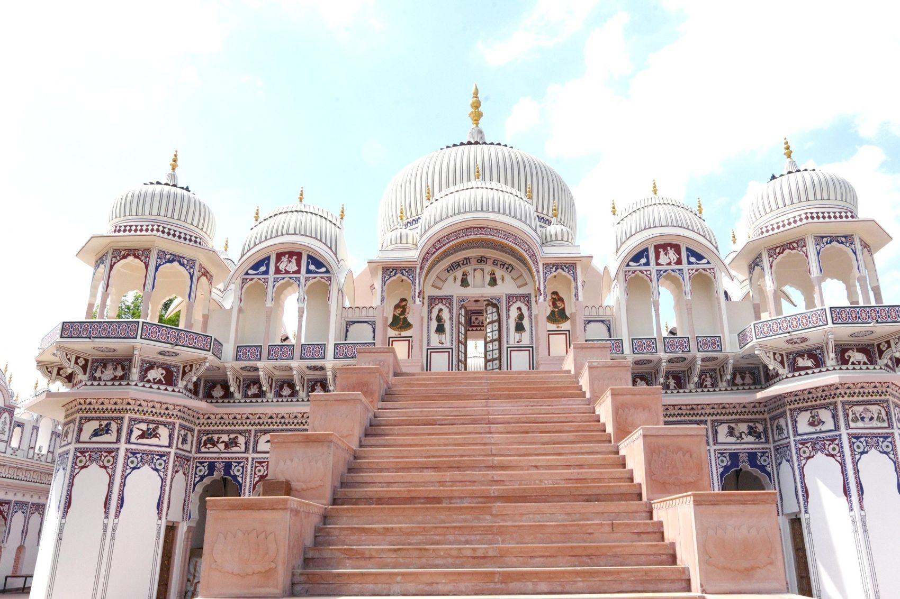
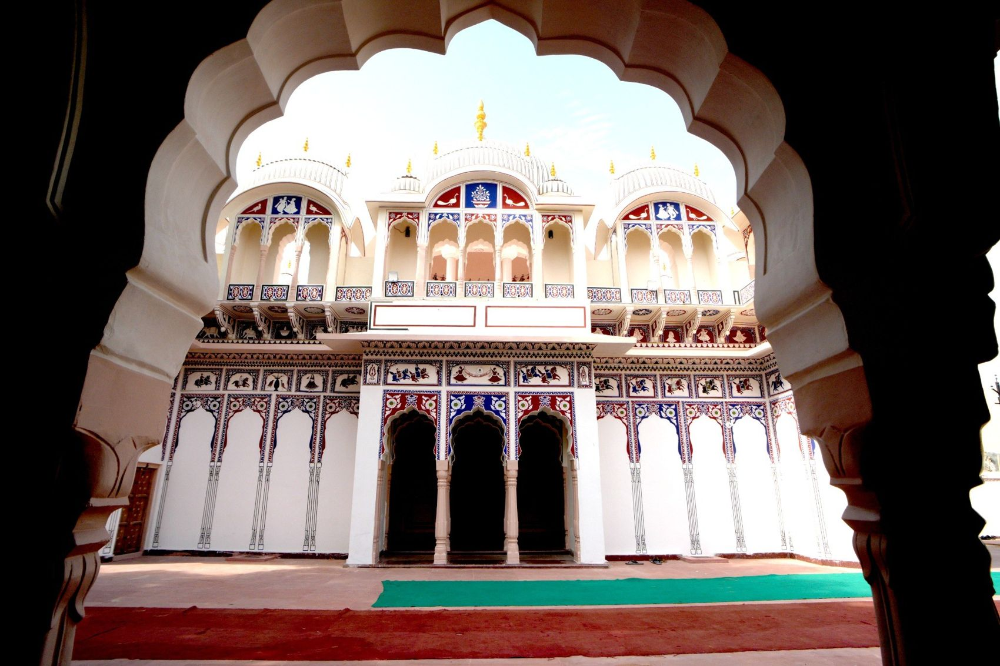
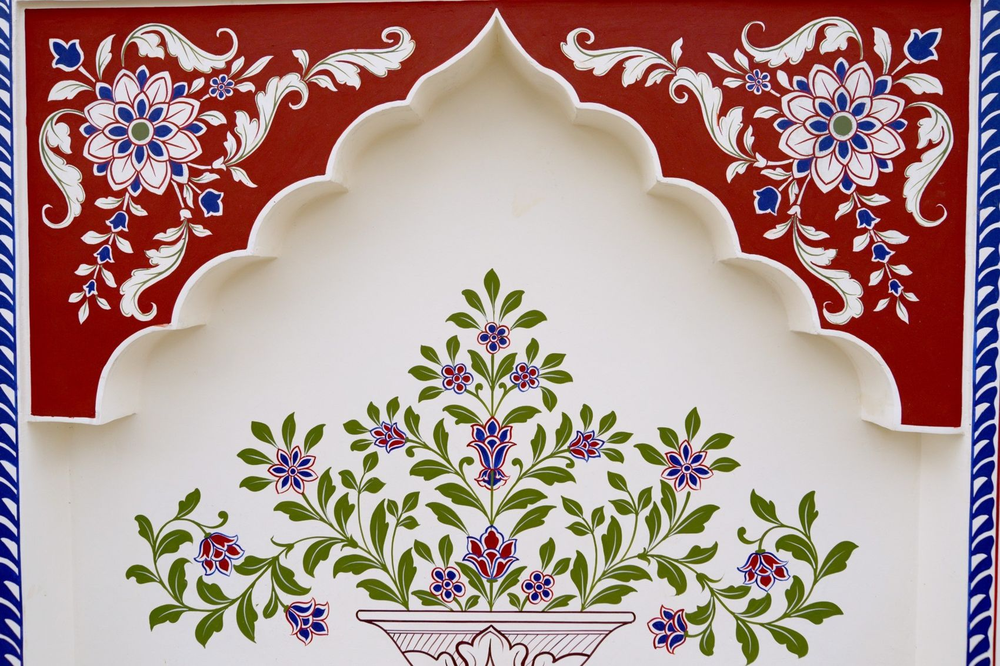
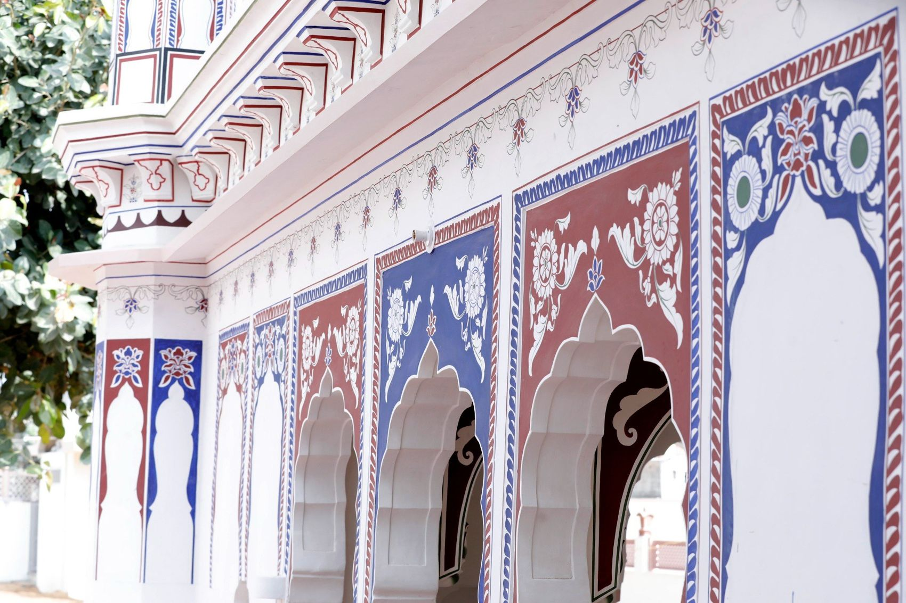
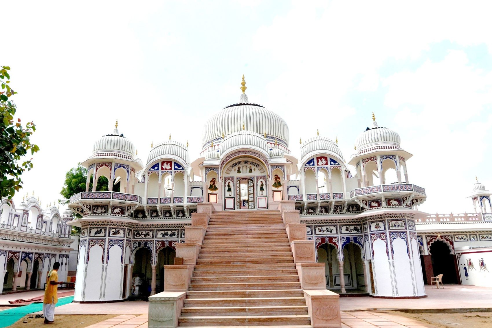

01 / FORMChhatris & Domes
01Traditional Rajasthani domes crown the roofline.
THE LANGUAGE OF CRAFT
Domes, arches, carved pillars and Shekhawati-style murals, seen up close.

01 / FORMTraditional Rajasthani domes crown the roofline.

02 / DETAILBeautiful arches frame views across the facade.

03 / COLOURHand-painted floral murals in the Shekhawati style.

04 / COLUMNSCarved pillars and arcades line the painted facade.

READING THE MONUMENT
A staircase leads from the ground level to the upper floor.
The grand main entrance faces east.
A Shivalaya and the temple of Lord Gaurishankar lie beneath the chhatri.
Shekhawati-style murals, refreshed from time to time by painters.
PRESERVE WHAT TIME HAS LEFT US
Inscriptions, old photographs, oral histories and restoration records can turn this website into a living archive, one that grows with every story shared.
CONTRIBUTE TO THE ARCHIVE ↗CONTENT MANAGEMENT
This is a design preview only. A production CMS needs secure authentication, a connected content store, editorial permissions and publishing workflows.